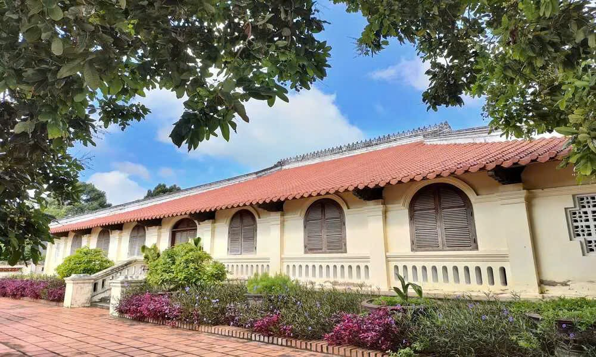
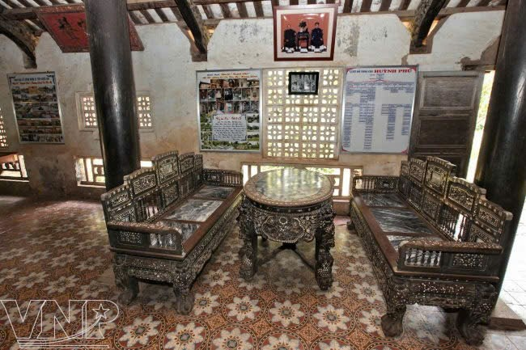
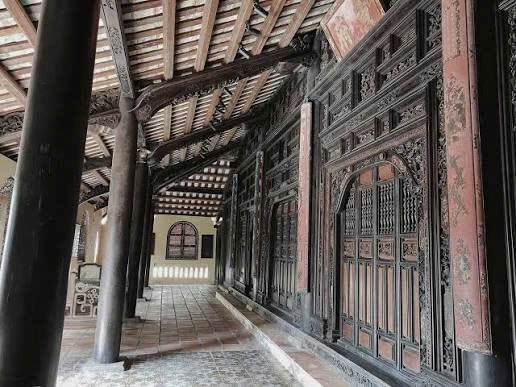
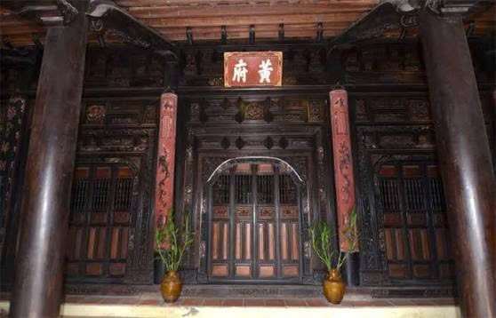

Di sản kiến trúc nhà cổ tiêu biểu của vùng đất Bến Tre.
Nhà cổ Huỳnh Phủ được xây dựng cách đây hơn 100 năm, là một trong những công trình kiến trúc nhà ở cổ tiêu biểu còn được bảo tồn khá nguyên vẹn tại Nam Bộ. Ngôi nhà mang phong cách kiến trúc truyền thống kết hợp giữa nghệ thuật chạm khắc dân gian và kỹ thuật xây dựng tinh xảo của các nghệ nhân xưa.
Toàn bộ kết cấu nhà chủ yếu bằng gỗ quý, với hệ thống cột, kèo, mái ngói âm dương và các hoa văn chạm khắc tinh tế thể hiện đời sống sinh hoạt, tín ngưỡng và thẩm mỹ của người dân Nam Bộ trong quá khứ. Hiện nay, nơi đây là điểm tham quan văn hóa – du lịch hấp dẫn đối với du khách trong và ngoài nước.



